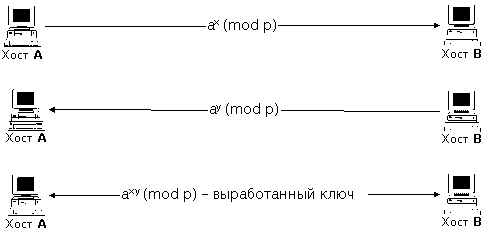

|
6.2. Виртуальный канал как средство обеспечения
дополнительной идентификации/аутентификации
объектов
в распределенной ВС
В предыдущем пункте рассматривались возможные
наиболее безопасные варианты физического
построения сети: как в РВС необходимо соединять
объекты для обеспечения наиболее безопасного
взаимодействия. Однако, для создания защищенного
взаимодействия удаленных объектов подобных мер
явно недостаточно, так как, во-первых, на практике
обеспечить взаимодействие всех объектов по
выделенному каналу достаточно сложно и,
во-вторых, нельзя не предусмотреть вариант
физического подключения к каналу. Следовательно,
разработчик защищенной системы связи в
распределенной ВС должен исходить из следующего
принципа:
Утверждение 2.
При построении защищенной системы связи в
распределенной ВС необходимо исходить из того,
что все сообщения, передаваемые по каналу связи,
могут быть перехвачены, но это не должно повлечь
за собой нарушения безопасности системы в целом.
Таким образом, данное утверждение накладывает
на разработчика следующие требования:
необходимость введения дополнительных средств
идентификации объектов в распределенной ВС и
криптозащита передаваемых по каналу связи
сообщений.
В п. 5.1.2 доказывалось, что идентификация
объектов РВС, в отсутствие статической ключевой
информации, возможна только при взаимодействии
объектов с использованием виртуального канала
(заметим, что в дальнейшем рассматривается
только распределенная ВС, у объектов которой
отсутствует ключевая информация для связи друг с
другом - в подобной системе решить задачу
безопасного взаимодействия несколько сложнее).
Следовательно, для того, чтобы ликвидировать
причину успеха удаленных атак, описанную в п.
5.1.2.1, а также, исходя из Утверждения 2, необходимо
руководствоваться следующим правилом:
Утверждение 3.
Любое взаимодействие двух объектов в
распределенной ВС должно проходить по
виртуальному каналу связи.
Рассмотрим, как в распределенной ВС
виртуальный канал (ВК) связи может
использоваться для надежной, независимой от
топологии и физической организации системы,
идентификации ее удаленных объектов.
Для этого при создании ВК могут использоваться
криптоалгоритмы с открытым ключом (например,
недавно в Internet принят подобный стандарт защиты
ВК, называемый Secret Socket Layer - SSL). Данные
криптоалгоритмы основаны на результатах
исследований, полученных в 70-х годах У. Диффи. Он
ввел понятие односторонней функции с потайным
входом. Это не просто вычисляемая в одну сторону
функция, обращение которой невозможно, она
содержит потайной вход (trapdoor), который позволяет
вычислять обратную функцию лицу, знающему
секретный ключ. Сущность криптографии с открытым
ключом (или двухключевой криптографии) в том, что
ключи, имеющиеся в криптосистеме, входят в нее
парами и каждая пара удовлетворяет следующим
двум свойствам:
- текст, зашифрованный на одном ключе, может быть
дешифрован на другом;
- знание одного ключа не позволяет вычислить
другой.
Поэтому один из ключей может быть опубликован.
При опубликованном (открытом) ключе шифрования и
секретном ключе дешифрования получается система
шифрования с открытым ключом. Каждый
пользователь сети связи может зашифровать
сообщение при помощи открытого ключа, а
расшифровать его сможет только владелец
секретного ключа. При опубликовании ключа
дешифрования получается система цифровой
подписи. Здесь только владелец секретного ключа
создания подписи может правильно зашифровать
текст (т.е. подписать его), а проверить подпись
(дешифровать текст) может любой на основании
опубликованного ключа проверки подписи.
В 1976 г. У. Диффи и М. Хеллман предложили
следующий метод открытого распределения ключей.
Пусть два объекта A и B условились о выборе
в качестве общей начальной информации большого
простого числа p и примитивного корня степени p -
1 из 1 в поле вычетов по модулю p. Тогда эти
пользователи действуют в соответствии с
протоколом (рис. 6.4):
A вырабатывает случайное число x, вычисляет
число ax (mod p) и посылает его B;
B вырабатывает случайное число y, вычисляет
число ay (mod p) и посылает его A;
затем A и B возводят полученное число в
степень со своим показателем и получают число axy
(mod p).

Рис. 6.4. Алгоритм У. Диффи и М. Хеллмана
открытого распределения ключей
Это число и является сеансовым ключом для
одноключевого алгоритма, например, DES. Для
раскрытия этого ключа криптоаналитику
необходимо по известным ax (mod p), ay (mod
p) найти axy (mod p) , т.е. найти x или y.
Нахождение числа x по его экспоненте ax (mod
p) называется задачей дискретного
логарифмирования в простом поле. Эта задача
является труднорешаемой, и поэтому полученный
ключ, в принципе, может быть стойким [11].
Особенность данного криптоалгоритма состоит в
том, что перехват по каналу связи пересылаемых в
процессе создания виртуального канала сообщений
ax (mod p) и ay (mod p) не позволит
атакующему получить конечный ключ шифрования axy (mod
p). Этот ключ далее должен использоваться,
во-первых, для цифровой подписи сообщений и,
во-вторых, для их криптозащиты. Цифровая подпись
сообщений позволяет надежно идентифицировать
объект распределенной ВС и виртуальный канал.
Шифрование сообщений необходимо для соблюдения
Утверждения 2. В заключении к данному пункту
сформулируем следующее требование к созданию
защищенных систем связи в распределенных ВС и
два следствия из него:
Утверждение 4.
Для обеспечения надежной идентификации
объектов распределенной ВС при создании
виртуального канала необходимо использовать
криптоалгоритмы с открытым ключом.
Следствие 4.1.
Необходимо обеспечить цифровую подпись
сообщений.
Следствие 4.2.
Необходимо обеспечить возможность шифрования
сообщений.
|